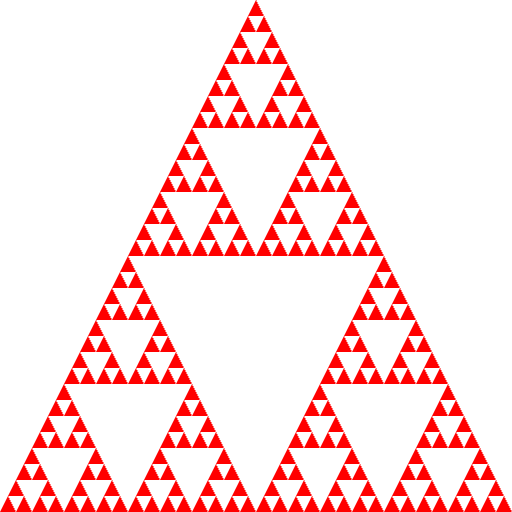

计算机图形学
第二章 图形学编程
3D
3D
关于3D
在WebGL中，二维应用可以看作是三维应用的一种特例。从二维到三维，并没有太多的区别，除了需要使用三维的向量如vec3, gl.uniform3f外，还有需要考虑的问题是如何利用隐面消除法正确渲染场景中的各种图元
3D
Sierpinski Gasket(2D)
绘制二维平面上的Sierpinski Gasket图案



重复五次后
3D
Gasket与分形
如果考虑填充区域及其周长，继续划分下去，当剖分层次越来越多，填充区域面积会趋近于0，但其周长趋向于无穷，这不是一个普通的几何问题，是一个分形问题
3D
Gasket程序
初始化三角形
var points = [];
var numTimesToSubdivide = 5;
/* initialise triangles */
var vertices = [
vec2( -1, -1 );
vec2( 0, 1 );
vec2( 1, -1 );
];
divideTriangle( vertices[0], vertices[1], vertices[2], numTimesToSubdivide );
绘制三角形
function triangle( a, b, c ){
points.push( a, b, c );
}
3D
Gasket程序(2)
三角剖分
function divideTriangle( a, b, c, count ){
// check for end of recursion
if ( count === 0 ) {
triangle( a, b, c );
}
else {
//bisect the sides
var ab = mix( a, b, 0.5 );
var ac = mix( a, c, 0.5 );
var bc = mix( b, c, 0.5 );
--count;
// three new triangles
divideTriangle( a, ab, ac, count-1 );
divideTriangle( c, ac, bc, count-1 );
divideTriangle( b, bc, ab, count-1 );
}
}
渲染函数
function render(){
gl.clear( gl.COLOR_BUFFER_BIT );
gl.drawArrays( gl.TRIANGLES, 0, points.length );
}
3D
Gasket程序(3)
初始化
var program = initShaders( gl,"vertex-shader", "fragment-shader" );
gl.useProgram( program );
var bufferId = gl.createBuffer();
gl.bindBuffer( gl.ARRAY_BUFFER, bufferId );
gl.bufferData( gl.ARRAY_BUFFER,flatten(points), gl.STATIC_DRAW );
var vPosition = gl.getAttribLocation(program, "vPosition" );
gl.vertexAttribPointer( vPosition, 2, gl.FLOAT, false, 0, 0 );
gl.enableVertexAttribArray( vPosition );
render();
3D
扩展到3D
将Gasket从2D扩展到3D，首先需要将顶点从二维扩展到三维，绘制的对象也从三角形扩展到四面体，并对每个四面体进行剖分
var vertices = [
vec3( 0.0000, 0.0000, -1.0000 ),
vec3( 0.0000, 0.9428, 0.3333 ),
vec3( -0.8165, -0.4714, 0.3333 ),
vec3( 0.8165, -0.4714, 0.3333 )
];
3D
Gasket in 3D


3 D
Gasket in 3D(2)
渲染时，三角形是按照程序中出现的顺序进行渲染，但并不意味着排在前面的三角形一定出现在相机的最前面
下面两个渲染图，哪一个是正确的？


3D
隐面消除
渲染结果中，我们只想看到位于最前方的平面，OpenGL采用的隐面消除算法称为z-buffer，其比较每个渲染对象的深度信息，将位于最前面的对象渲染在图像上

3D
使用Z-Buffer
Z-buffert算法使用一个单独的缓存，称为z-缓存用于保存几何形体在流经图形管线时的深度信息。在WebGL中同样支持z-buffer，且必须打开
- 打开： gl.enable(gl.DEPTH_TEST);
- 清空缓存：gl.clear( gl.COLOR_BUFFER_BIT | gl.DEPTH_BUFFER_BIT )